SA-U1-2-3 梁與剛架之內力分析
0 開場
這一集講梁與剛架的內力分析。目標只有一個：畫剪力圖和彎矩圖的時候，不要逐點代值。
我們只用三把工具：
| 工具 | 內容 |
|---|---|
| ① 內鉸是一把刀 | 切開內鉸 → 先解附屬結構 |
| ② 微分關係 | \(\dfrac{dV}{dx}=-w,\ \dfrac{dM}{dx}=V\) → 用面積法推形狀 |
| ③ 受拉側＋節點平衡 | 剛架彎矩畫在受拉側，並且在節點檢查平衡 |
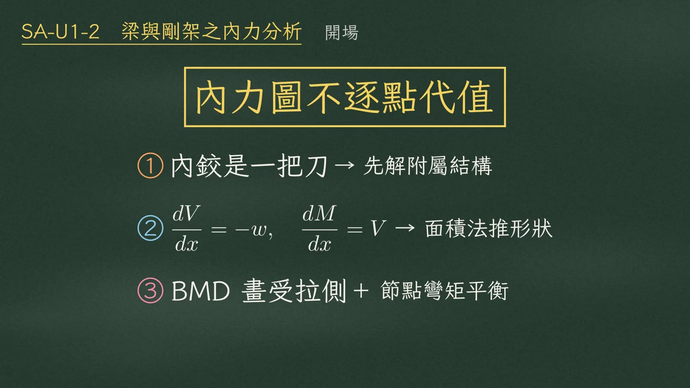
1 內鉸是一把刀：先解附屬結構
例題：帶內鉸的梁
先看這根梁。左端 A 是固定端，8 m 處 C 是內鉸，再過 4 m D 是滾支承。AC 段受均布載重 10 kN/m，CD 段在中點有 20 kN 的集中力。
反力有四個，用靜定判定式：
$$d=r-3-c=4-3-1=0\quad\Rightarrow\ \text{靜定}$$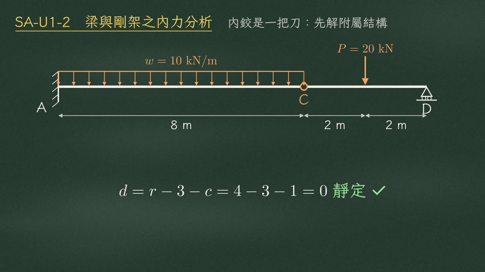
內鉸不能傳彎矩，所以內鉸處的彎矩一定等於零，\(M_C=0\)，這就是多出來的第四個方程式。
哪一半先解？問一句話：
拿掉 CD，AC 還是一根懸臂，站得住 → AC 是主結構。
拿掉 AC，CD 只剩一個滾支承，馬上倒 → CD 是附屬結構。
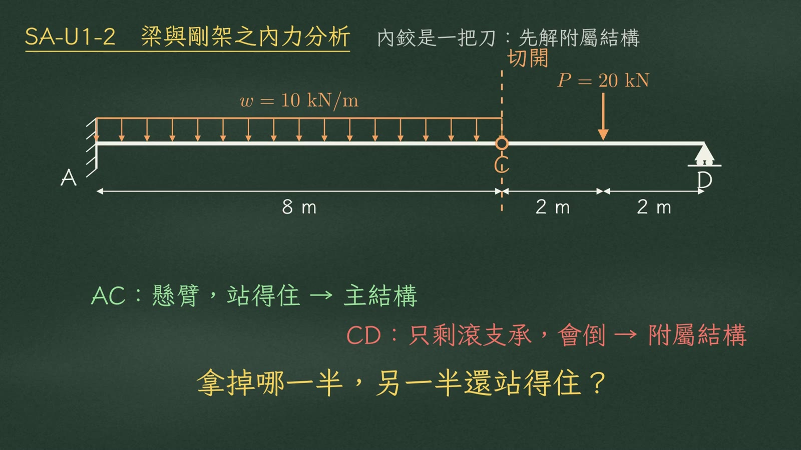
① 先解附屬結構 CD
附屬結構未知數少，先解它。對內鉸 C 取矩：
$$\Sigma M_C=0:\ R_D\times4=20\times2\ \Rightarrow\ R_D=10\ \text{kN}\ (\uparrow)$$再用垂直力平衡，內鉸傳遞的剪力：
$$V_C=20-10=10\ \text{kN}$$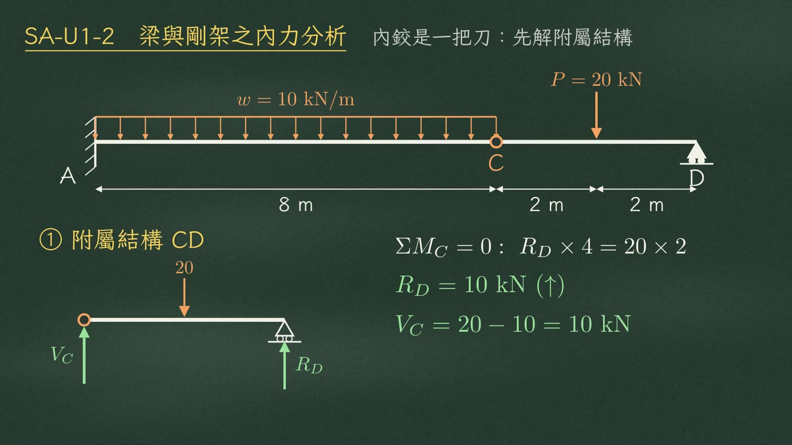
② 再解主結構 AC
接著把 \(V_C\) 反向施加到主結構上：CD 在 C 點被往上托 10，所以 AC 在 C 點被往下壓 10。主結構就是一根懸臂：
$$R_A=80+10=90\ \text{kN}$$ $$M_A=80\times4+10\times8=400\ \text{kN}\cdot\text{m}\quad(\text{上側受拉})$$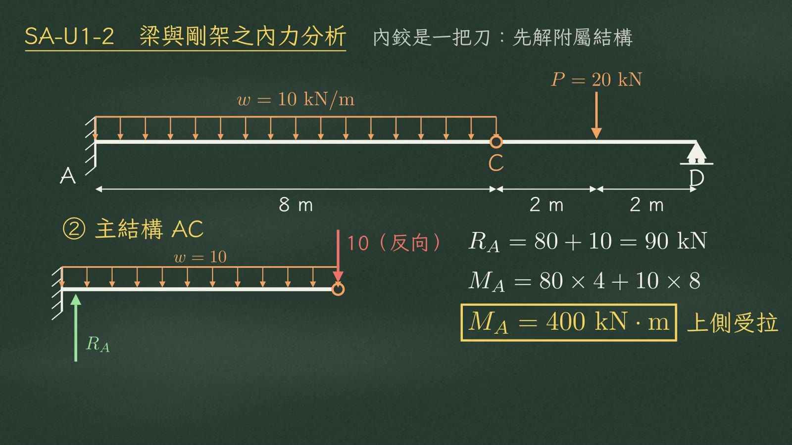
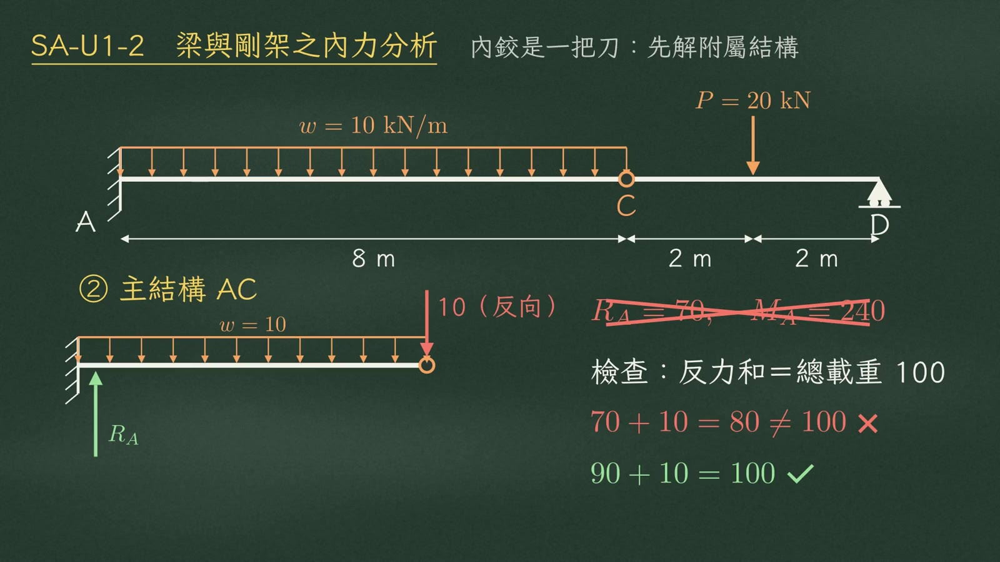
2 微分關係推 SFD／BMD
反力有了，內力圖不必一點一點代。只要記兩條關係：
$$\color{#2f78b5}{\frac{dV}{dx}=-w}\qquad\color{#c2477a}{\frac{dM}{dx}=V}$$換成考場好用的面積法：
$$\color{#2f78b5}{\Delta V=-(\text{載重圖面積})}\qquad\color{#c2477a}{\Delta M=+(\text{剪力圖面積})}$$黑板配色：藍＝剪力 V、粉紅＝彎矩 M、綠＝反力／正確、紅＝錯誤。
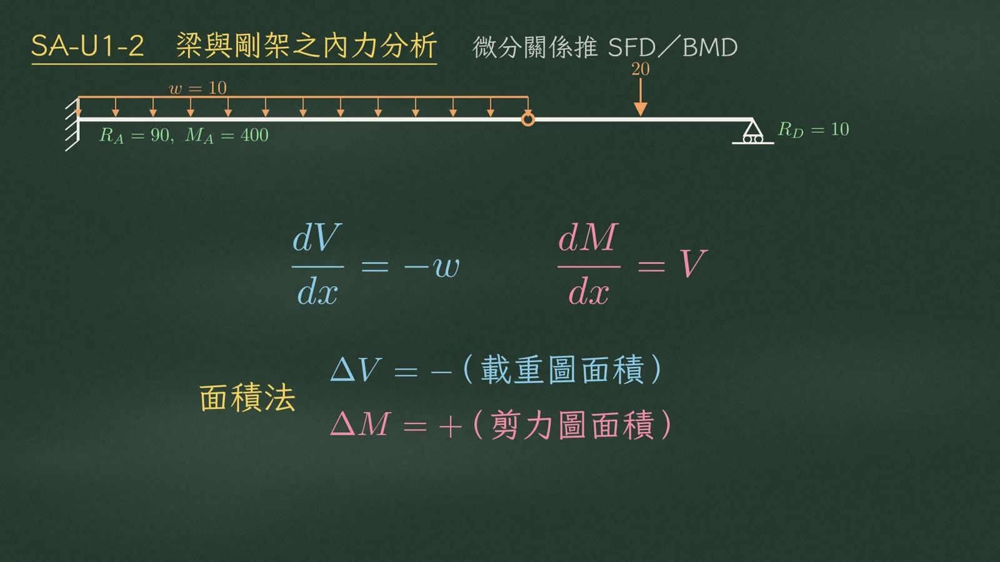
所以每種載重的形狀是固定的：
| 載重 | 剪力 V | 彎矩 M |
|---|---|---|
| 無載重 | 常數 | 直線 |
| 均布 w | 斜直線 | 二次曲線 |
| 集中力 P | 跳一格（跳躍） | 出現折點 |
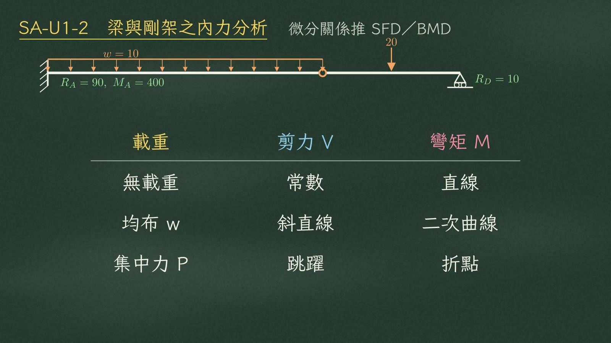
剪力圖（由左往右）
A 端起跳 +90，AC 段斜率是 \(-w=-10\)，走了 8 m，掉了 \(10\times8=80\)，到內鉸剩 +10——注意它不歸零。CD 段沒有載重，維持 +10，碰到 20 kN 往下跳到 −10，到 D 點再被 \(R_D\) 拉回零。
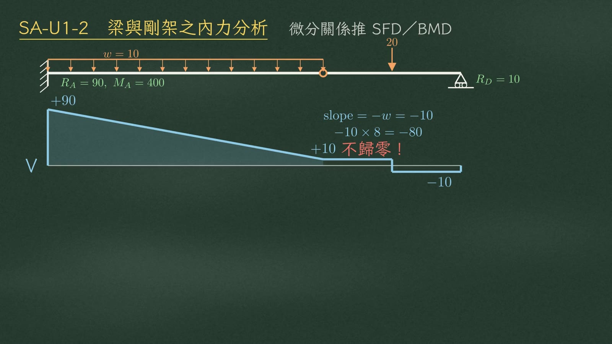
彎矩圖（由左往右）
A 點是 −400，上側受拉，畫在梁的上方。AC 段的剪力圖是梯形，面積：
$$\frac{90+10}{2}\times8=400\qquad -400+400=0$$到內鉸剛好歸零。
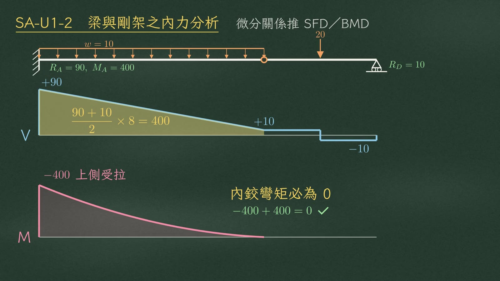
CD 段，剪力 +10 走 2 m，彎矩加 20，在集中力處達到 +20，下側受拉；接著剪力變成 −10，再走 2 m，回到零。
彎矩圖穿過零線的地方就是反曲點，這一題的反曲點剛好就在內鉸上。
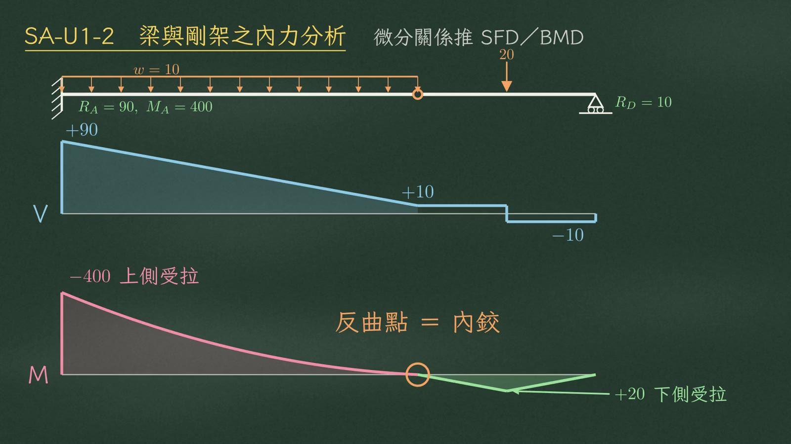
3 三鉸剛架：受拉側與節點平衡
例題：三鉸剛架
跨度 12 m，柱高 6 m，A 和 E 都是鉸支承，梁的中央 C 是內鉸。梁上滿佈 8 kN/m，B 點還有一個向右的 20 kN。
四個反力 \(V_A, H_A, V_E, H_E\)，三個整體平衡加上 \(M_C=0\)，剛好四條方程式（\(d=4-3-1=0\) 靜定）。
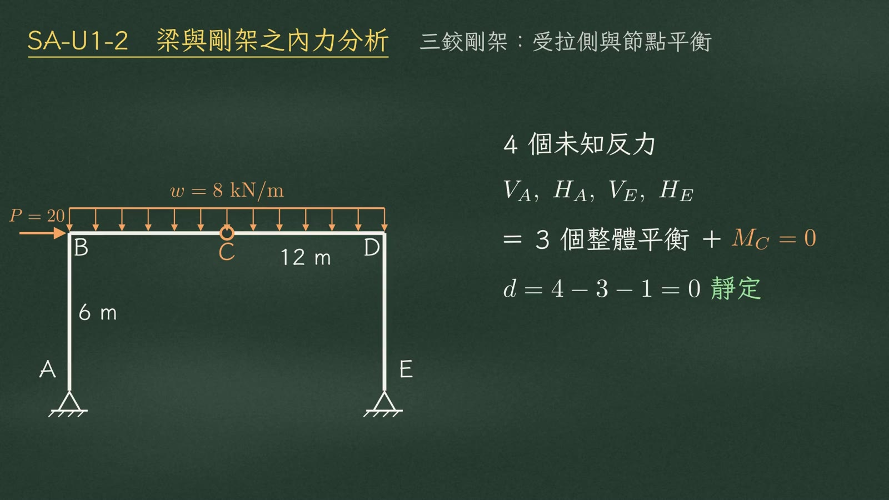
第一步 對 A 取矩解豎向反力
$$V_E\times12=96\times6+20\times6\ \Rightarrow\ V_E=58,\quad V_A=38$$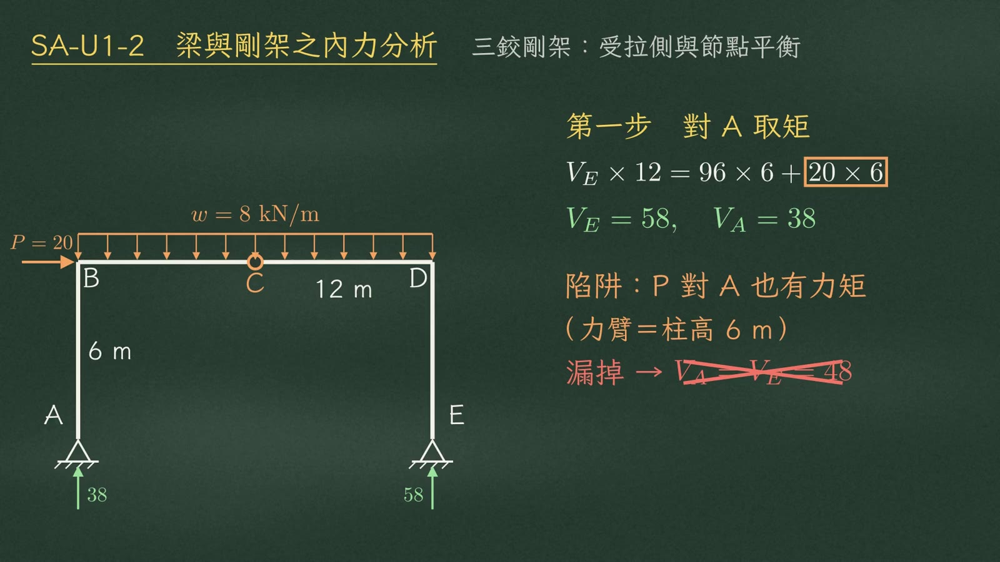
第二步 用內鉸
取左半部 ABC 對 C 取矩：
$$38\times6-H_A\times6-48\times3=0\ \Rightarrow\ H_A=14\ \text{kN}\ (\rightarrow)$$再用水平力平衡：
$$H_E=34\ \text{kN}\ (\leftarrow)$$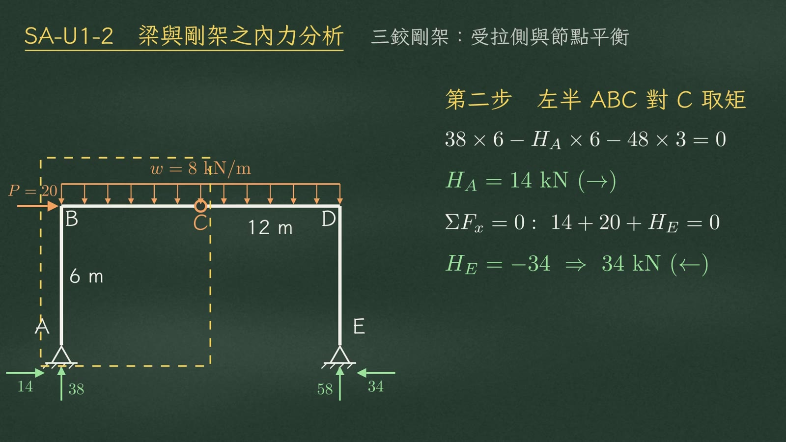
第三步 柱頂彎矩＝水平反力 × 柱高
$$M_B=14\times6=84\qquad M_D=34\times6=204$$畫在哪一側？兩個柱腳都被水平反力往內推，柱子的外側受拉，所以柱的彎矩圖畫在外側，從柱腳的零線性長到柱頂。
然後在節點 B 檢查。剛接節點本身也要平衡，所以梁端彎矩一定等於柱端彎矩：
$$\Sigma M_B=84-84=0\ \checkmark$$受拉側也連續轉過角落，柱的外側接到梁的上側。D 點同理，兩邊都是 204。
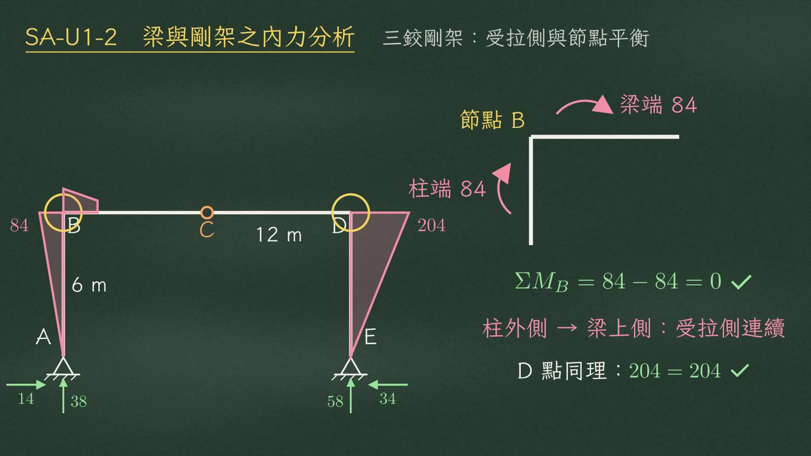
第四步 梁的彎矩方程式（x 從 B 量起）
$$M(x)=-84+38x-4x^2=-2(2x-7)(x-6)$$令它等於零，\(x=3.5\)，以及 \(x=6\)，也就是內鉸，又自動歸零了。再令剪力等於零：
$$V=38-8x=0\ \Rightarrow\ x=4.75,\qquad M^+_{max}=6.25\ \text{kN}\cdot\text{m}$$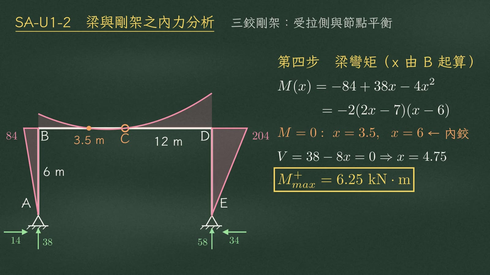
6.25 有多小？同樣跨度的簡支梁，跨中彎矩是
$$\frac{wL^2}{8}=\frac{8\times12^2}{8}=144$$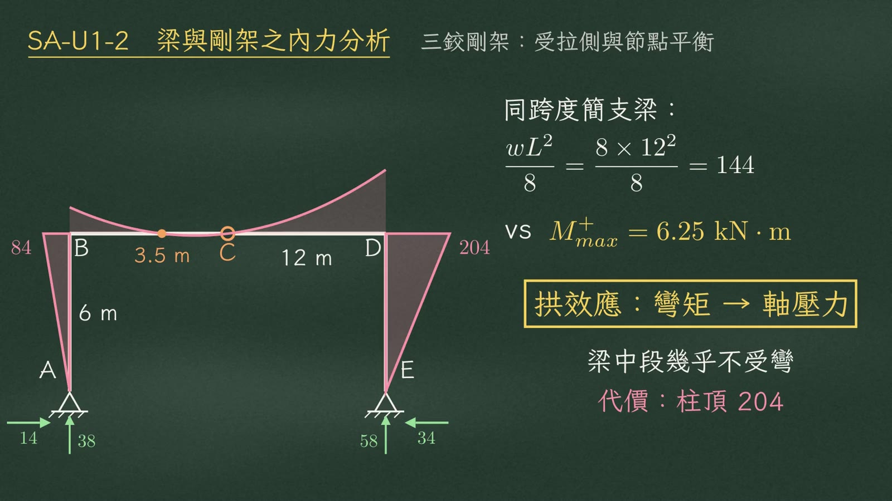
4 考場四步 SOP
| 步驟 | 做什麼 |
|---|---|
| ① 靜定判定 | 用 \(d=r-3-c\) 確認靜定 |
| ② 切內鉸 | 先解附屬結構，把傳遞力反向施加，再解主結構 |
| ③ 畫 SFD | 用面積法 \(\Delta V=-\int w\,dx\) 從左往右推，找剪力等於零的位置 |
| ④ 畫 BMD | 用面積法 \(\Delta M=\int V\,dx\) 推，畫在受拉側，剛架每個節點檢查彎矩平衡 |
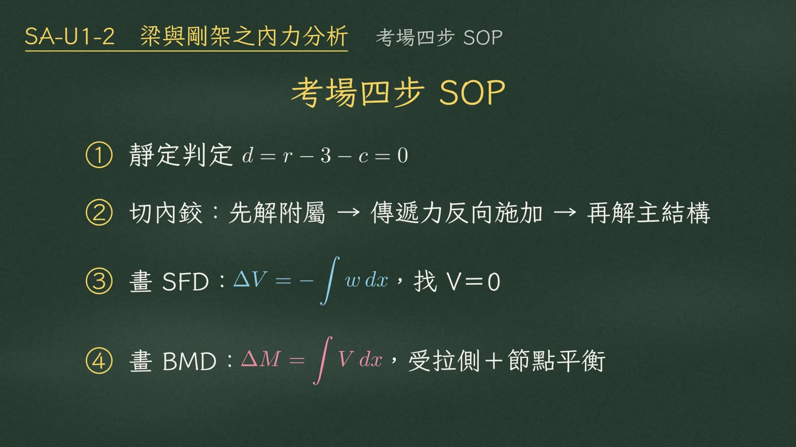
① 內鉸的彎矩一定算出零。
② 反力加起來要等於總載重。
③ 剛接節點：梁端等於柱端。
這一集兩個例題的答案：
| 例題 | 答案 |
|---|---|
| 帶內鉸梁 | \(R_A=90\) kN、\(M_A=400\) kN·m、\(R_D=10\) kN |
| 三鉸剛架 | \(H_A=14\) kN、\(H_E=34\) kN；柱頂彎矩 \(M_B=84\)、\(M_D=204\) kN·m |
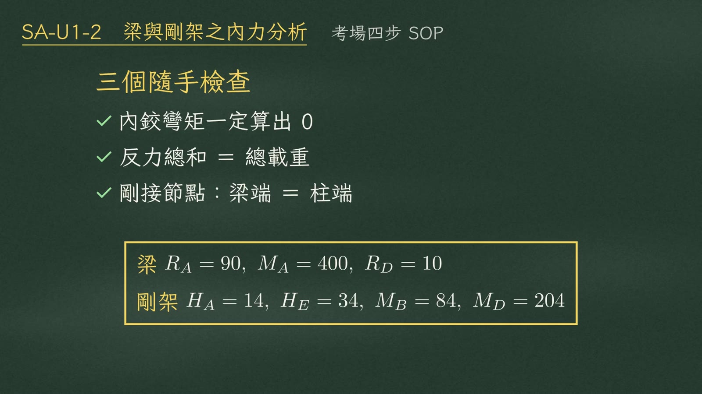
video/SA-U1-2.mp4（7:34）、video/segments.py（逐字旁白，權威講稿）、video/SA-U1-2.srt（字幕時間軸）、video/HANDOFF.md（例題數值已複核）。黑板圖取自各段結束前 0.5 秒畫面。